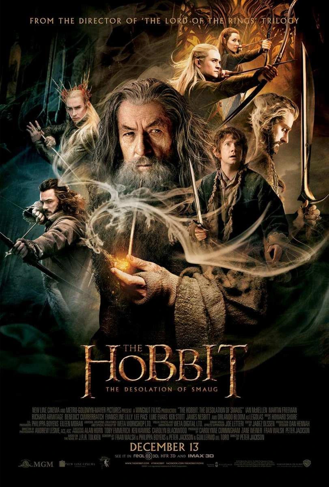

Ficha de la película
Año: 2013
Director: Peter Jackson
Novela: J.R.R. Tolkien
Duración: 161min
Saga: EL HOBBIT
Reparto principal:
Martin Freeman, Ian McKellen, Richard Armitage, Evangeline Lilly, Orlando Bloom, Luke Evans, Benedict Cumberbatch, Lee Pace, Ken Stott, Stephen Fry, Mikael Persbrandt, Aidan Turner, Dean O'Gorman
Sinopsis
Tras escapar de las Montañas Nubladas, Bilbo Bolsón y la compañía de enanos continúan su viaje hacia el Este. Deben atravesar el peligroso Bosque Negro sin la ayuda de Gandalf, enfrentándose a arañas gigantes y cayendo prisioneros de los Elfos Silvanos. Tras un audaz escape, llegan a la Ciudad del Lago y finalmente a la Montaña Solitaria, donde Bilbo debe colarse en el guarida del temible dragón Smaug para encontrar la Piedra del Arca antes de que sea demasiado tarde.
Personajes que aparecen
Bilbo Bolsón · Gandalf · Thorin Escudo de Roble · Smaug · Legolas · Tauriel · Thranduil · Bardo el Arquero · Gobernador de Esgaroth · Beorn · Azog el Profanador · Bolgo · Necromante (Sauron)
Lugares importantes
Casa de Beorn · Bosque Negro · El Reino del Bosque (Palacio de Thranduil) · Esgaroth (Ciudad del Lago) · Erebor (La Montaña Solitaria) · Dol Guldur
Objetos importantes
Anillo ÚnicoLa Piedra del Arca (Arkenstone)Espada DardoFlecha Negra (de Bardo)Llave de EreborCuriosidades
Doble personaje para Cumberbatch: Benedict Cumberbatch no solo le puso la voz a Smaug mediante motion capture, sino que también prestó su voz para el Necromante (Sauron).
Personaje inventado: El personaje de Tauriel (interpretado por Evangeline Lilly) no existe en el libro de Tolkien. Fue creado por Peter Jackson y Fran Walsh para agregar una presencia femenina fuerte y un triángulo amoroso a la trama.
Marea de barriles: La escena del escape en barriles por el río requería tanto movimiento que se construyó una atracción de parque acuático en el set con chorros de agua hiperpotentes para mover los barriles con los actores dentro.